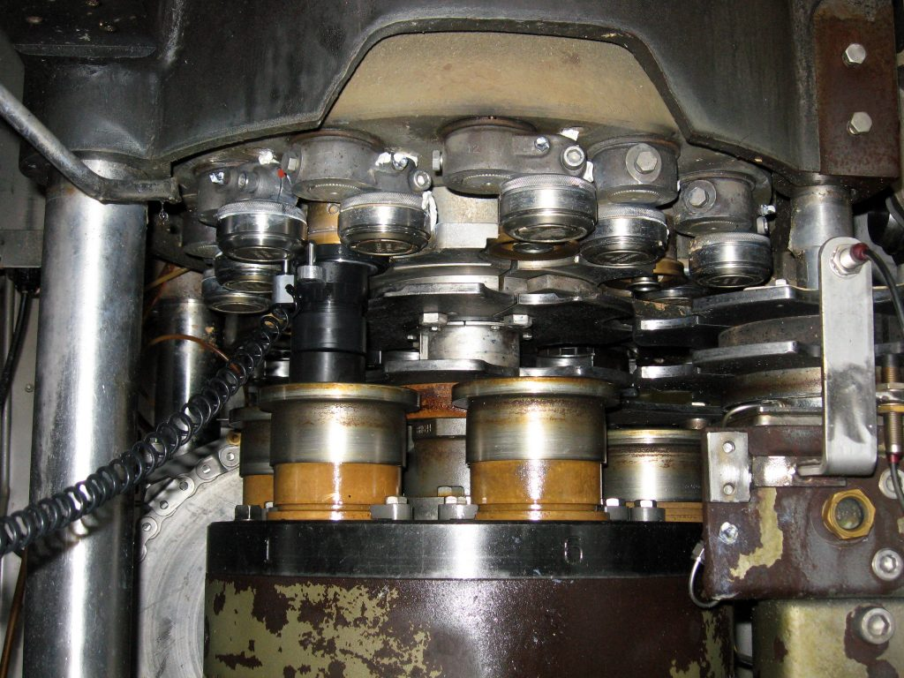
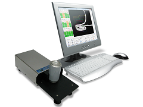
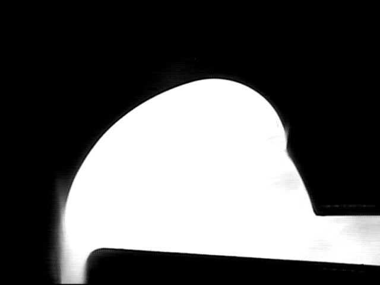
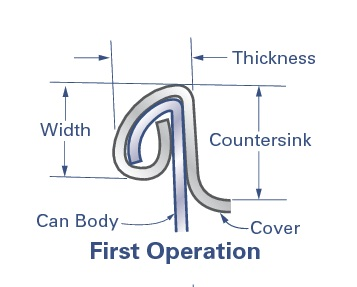
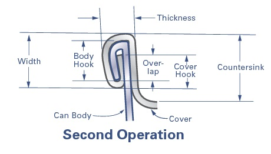
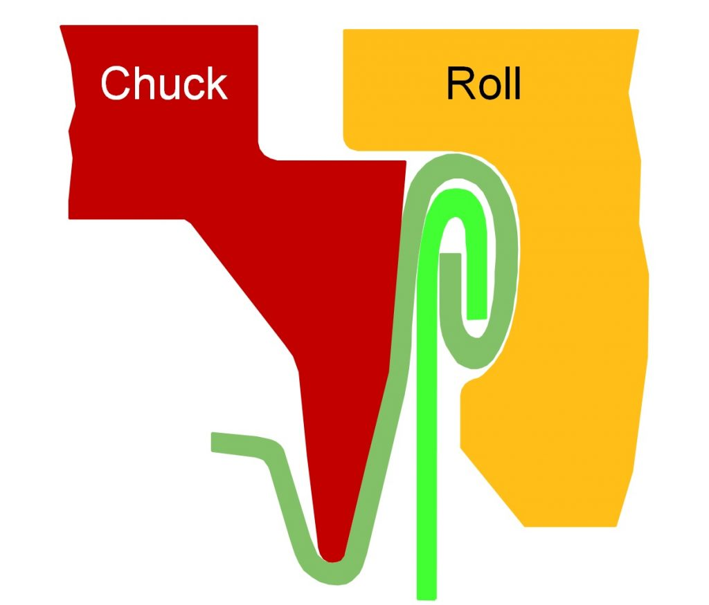
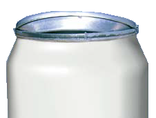

🔧 Como Fazer?
Guias práticos e procedimentos para configuração, inspeção e controle de qualidade da recravação.

Configuração da Recravação
Guia passo a passo com videos para configuracao correta da recravadeira.

Como é Feita a Recravação Dupla?
O processo completo de formação da recravação dupla em duas operações.

Como Fazer Controle de Qualidade da Recravação Dupla
Procedimentos corretos para o controle de qualidade da recravação dupla.

Como Garantir que os Rolos Estão em Boas Condições
Procedimento de inspecao e manutencao dos rolos de recravação.

O que é a Primeira Operação?
Entenda o que acontece na primeira operação de recravação e como ela forma a recravação.

O que é a Segunda Operação?
A segunda operação comprime e finaliza a iniciada na primeira operação.
Configuração da Primeira Operação
Como ajustar e configurar o rolo da primeira operação corretamente.

Configuração da Segunda Operação
Como ajustar e configurar o rolo da segunda operação corretamente.

Configuração da Recravação
Métodos de inspeção para avaliação da qualidade da recravação.
Configuração da Recravação
Uso de sistemas computadorizados para medição e análise da recravação.
Ferramental de Recravadeira Danificado
Como identificar ferramental danificado e seus efeitos na qualidade.
Ferramental Danificado
Tipos de danos ao ferramental e como proceder.
Rolamento Danificado
Identificacao e consequencias de rolamentos danificados.

Desmontagem/Teardown
Procedimento de teardown da para analise destrutiva completa.
Regulamentação 21 CFR 11 / FDA
Requisitos regulatorios FDA para sistemas de controle de qualidade.